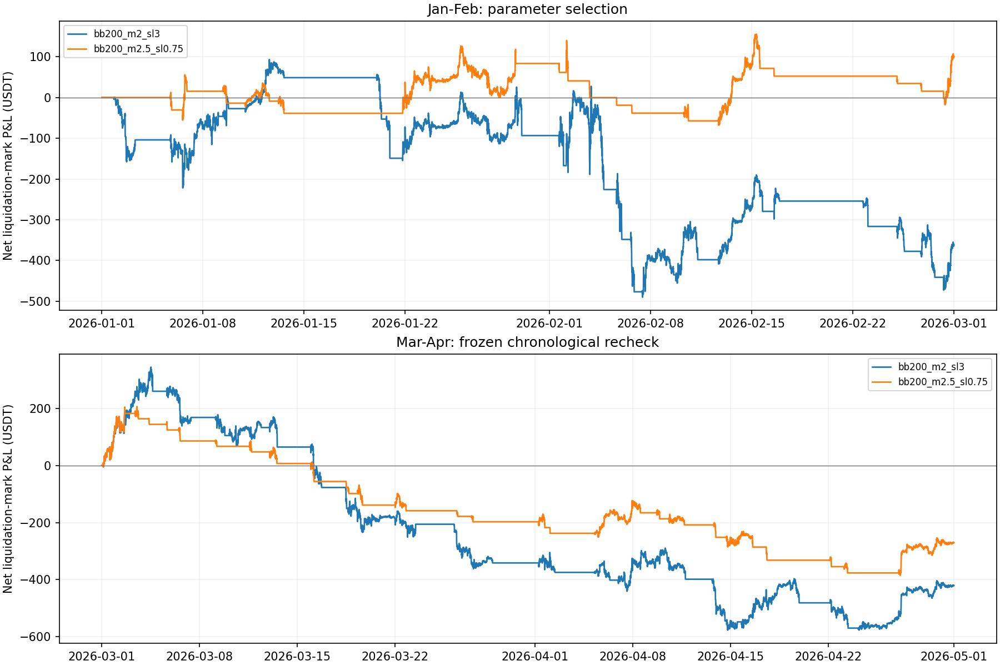

前段按预定规则选出 BB 200 / 2.5；止损 0.75%。后段复查未能保持正收益；本轮没有找到可确认有效的参数。
候选前段自然平仓净盈亏 -2.19 USDT，计入期末持仓及预留退出费后为 100.52 USDT。后段 38 笔完整交易仅 4 笔盈利，最长连续亏损 22 笔；已平仓净盈亏 -376.47 USDT，计入期末持仓后仍亏 270.69 USDT。前段排名提升没有转化为后段盈利。
本轮搜索 315 组，符合交易数门槛 212 组。这是固定网格内的历史选择，不是全局最优，也不是全新样本外验证。3—4 月已在上一轮基准回测中看过；本轮未使用 5 月之后的保留数据。
| 角色 | 配置编号 | BB / 止损 | Stoch / 阈值 | 前段邻域中位 USDT |
|---|---|---|---|---|
| 原始参数 | bb200_m2_sl3 | BB 200 / 2；止损 3% | 5 / 3 / 3；20 / 80 | -362.27 |
| 前段峰值 / 邻近参数优选 | bb200_m2.5_sl0.75 | BB 200 / 2.5；止损 0.75% | 5 / 3 / 3；20 / 80 | 63.07 |
“邻近参数优选”按本组及三个参数轴各向前后一步的合格邻居收益中位数选出，至少 3 组合格；“前段峰值”按本组前段收益最高选出。两者均在读取本轮后段价格前冻结；后段不重新挑冠军。
全部固定每次 1 ETH，每边手续费 0.1%。净值盈亏包含期末持仓按最后收盘计价，并预留剩余仓位退出费；PF、胜率只统计自然平仓。收盘回撤包含持仓浮盈浮亏，不是盘中最大回撤。初始权益 100,000 USDT 只是曲线记账基数，不表示全仓或杠杆设置。
下表净盈亏、回撤单位均为 USDT；“平仓/未平”分别为自然结束笔数和截止时未平仓笔数。后面参数表的“配置”依次为 BB 长度 / 倍数 / 止损百分比。
| 配置 | 路径 | 平仓/未平 | 净盈亏 | 回撤 | PF | 胜率% | 随机bp | 超额bp | 配对 | p |
|---|---|---|---|---|---|---|---|---|---|---|
| 1—2 · 原始 | TV | 32 / 1 | -361.66 | 583.39 | 0.65 | 43.8 | -71.63 | -26.95 | 27 | 0.75 |
| 1—2 · 原始 | 逆向优先 | 32 / 1 | -361.66 | 583.39 | 0.65 | 43.8 | -71.63 | -26.95 | 27 | 0.75 |
| 1—2 · 候选 | TV | 22 / 1 | 100.52 | 207.94 | 0.99 | 22.7 | -33.88 | 28.75 | 22 | 0.25 |
| 1—2 · 候选 | 逆向优先 | 22 / 1 | 100.52 | 207.94 | 0.99 | 22.7 | -33.88 | 28.75 | 22 | 0.25 |
| 3—4 · 原始 | TV | 38 / 1 | -420.68 | 921.32 | 0.58 | 39.5 | -60.92 | -6.41 | 34 | 0.75 |
| 3—4 · 原始 | 逆向优先 | 38 / 1 | -420.68 | 921.32 | 0.58 | 39.5 | -60.92 | -6.41 | 34 | 0.75 |
| 3—4 · 候选 | TV | 38 / 1 | -270.69 | 591.55 | 0.46 | 10.5 | -29.77 | -7.93 | 35 | 1.00 |
| 3—4 · 候选 | 逆向优先 | 38 / 1 | -270.69 | 591.55 | 0.46 | 10.5 | -30.31 | -7.39 | 35 | 1.00 |
随机对照按相同 ETH / 方向 / UTC 信号月份 / 因果波动桶抽样，每笔 5 次且组内不重复，用相同退出和成本规则；它是事件对照，不能把重叠随机交易的盈亏相加当作可执行组合。bp 是相对于各自开仓名义金额的万分比。相对随机 = 完整配对实际单笔均值 − 对照单笔均值。只保留双方自然结束的完整组用于 p；截尾不重抽。每段仅两个月块，单侧符号翻转检验最小 p=0.25，不能通过项目 p<0.01 的优势门槛。

图中两段各自空仓起步，前史只预热；实线为 TV 的固定 OHLC 顺序，虚线（如有）为先走不利方向的敏感性路径。收益排序使用两条路径中较低的净值盈亏。两条路径不是逐笔成交，也不能代表真实盘中顺序的全部可能性。
仅展示达到事先规定门槛的配置；取各自收益较低的路径。这里只解释搜索结果，不据后段结果更改选择。
| 配置 | 路径 | 平仓/未平 | 净盈亏 | 回撤 | PF | 胜率% | 随机bp | 超额bp | 配对 | p |
|---|---|---|---|---|---|---|---|---|---|---|
| 200 / 2.5 / 0.75% | TV | 22 / 1 | 100.52 | 207.94 | 0.99 | 22.7 | -33.88 | 28.75 | 22 | 0.25 |
| 100 / 2 / 1.5% | TV | 53 / 0 | 97.11 | 352.36 | 1.09 | 49.1 | -19.45 | 29.28 | 53 | 0.50 |
| 200 / 2.5 / 1.5% | TV | 22 / 1 | 77.40 | 290.01 | 0.95 | 36.4 | -45.29 | 60.00 | 19 | 0.25 |
| 50 / 1.5 / 2% | TV | 87 / 0 | 76.01 | 452.37 | 1.06 | 54.0 | -32.74 | 39.58 | 85 | 0.25 |
| 200 / 1.5 / 1.5% | TV | 73 / 0 | 74.10 | 619.02 | 1.05 | 46.6 | -36.84 | 41.52 | 73 | 0.25 |
| 200 / 2 / 0.75% | TV | 37 / 1 | 64.48 | 288.04 | 0.95 | 24.3 | -34.30 | 25.50 | 37 | 0.25 |
| 200 / 2.5 / 1% | TV | 22 / 1 | 63.07 | 250.99 | 0.91 | 27.3 | -41.37 | 30.72 | 21 | 0.25 |
| 200 / 2 / 1.5% | TV | 35 / 1 | 41.86 | 393.03 | 0.94 | 37.1 | -48.85 | 44.01 | 32 | 0.25 |
| 150 / 2.5 / 2% | TV | 30 / 0 | 39.25 | 383.86 | 1.05 | 50.0 | -39.30 | 52.60 | 29 | 0.25 |
| 100 / 2 / 2% | TV | 50 / 0 | 34.97 | 436.96 | 1.03 | 54.0 | -33.70 | 41.55 | 50 | 0.50 |
以下每组只改 BB 长度、BB 倍数或止损中的一项，其余保留 200 / 2 / 3%。用于观察变化方向；完整网格见交付文件。
| 配置 | 路径 | 平仓/未平 | 净盈亏 | 回撤 | PF | 胜率% | 随机bp | 超额bp | 配对 | p |
|---|---|---|---|---|---|---|---|---|---|---|
| 20 / 2 / 3% | TV | 8 / 0 | -18.66 | 92.05 | 0.78 | 50.0 | 5.08 | -12.89 | 8 | 0.75 |
| 50 / 2 / 3% | TV | 52 / 1 | -304.53 | 670.99 | 0.78 | 53.8 | -41.56 | 19.34 | 51 | 0.25 |
| 100 / 2 / 3% | TV | 49 / 1 | -296.60 | 652.34 | 0.82 | 57.1 | -50.00 | 25.40 | 48 | 0.50 |
| 150 / 2 / 3% | TV | 41 / 1 | -782.15 | 942.28 | 0.51 | 46.3 | -43.92 | -34.54 | 40 | 1.00 |
| 200 / 1 / 3% | TV | 90 / 1 | -835.16 | 1,150.94 | 0.69 | 52.2 | -36.72 | -2.58 | 89 | 0.75 |
| 200 / 1.5 / 3% | TV | 64 / 1 | -409.29 | 1,044.88 | 0.81 | 54.7 | -43.96 | 15.68 | 63 | 0.50 |
| 200 / 2 / 0.3% | TV | 41 / 0 | -154.96 | 227.67 | 0.65 | 12.2 | -25.87 | 7.17 | 41 | 0.50 |
| 200 / 2 / 0.5% | TV | 39 / 0 | -26.71 | 254.03 | 0.95 | 20.5 | -24.61 | 13.19 | 39 | 0.50 |
| 200 / 2 / 0.75% | TV | 37 / 1 | 64.48 | 288.04 | 0.95 | 24.3 | -34.30 | 25.50 | 37 | 0.25 |
| 200 / 2 / 1% | TV | 37 / 1 | -45.46 | 356.79 | 0.82 | 27.0 | -44.85 | 18.00 | 36 | 0.50 |
| 200 / 2 / 1.5% | TV | 35 / 1 | 41.86 | 393.03 | 0.94 | 37.1 | -48.85 | 44.01 | 32 | 0.25 |
| 200 / 2 / 2% | TV | 33 / 1 | -140.29 | 458.43 | 0.79 | 39.4 | -58.02 | 12.01 | 29 | 0.25 |
| 200 / 2 / 3% | TV | 32 / 1 | -361.66 | 583.39 | 0.65 | 43.8 | -71.63 | -26.95 | 27 | 0.75 |
| 200 / 2 / 4% | TV | 28 / 1 | -362.27 | 607.17 | 0.64 | 50.0 | -107.87 | -5.50 | 23 | 0.75 |
| 200 / 2 / 5% | TV | 28 / 1 | -584.34 | 799.27 | 0.54 | 50.0 | -124.70 | -21.48 | 23 | 0.75 |
| 200 / 2.5 / 3% | TV | 20 / 1 | -283.00 | 471.08 | 0.58 | 40.0 | -57.76 | -28.44 | 16 | 1.00 |
| 200 / 3 / 3% | TV | 10 / 1 | -149.09 | 479.91 | 0.45 | 30.0 | -111.83 | -7.29 | 7 | 0.75 |
| 300 / 2 / 3% | TV | 24 / 0 | -408.23 | 451.49 | 0.62 | 41.7 | -53.92 | -28.04 | 21 | 1.00 |
| 400 / 2 / 3% | TV | 21 / 0 | -966.70 | 979.78 | 0.21 | 23.8 | -46.95 | -153.13 | 19 | 1.00 |
| 阶段 | 配置 | 信号数 | 入场数 | 随机样本 | 随机截尾 | 非完整配对 | 市价化 BE 近似 | 同开盘 BE 近似 |
|---|---|---|---|---|---|---|---|---|
| 1—2 月 | 原始参数 | 46 | 33 | 165 | 5 | 6 | 1 | 0 |
| 1—2 月 | 前段峰值 / 邻近参数优选 | 27 | 23 | 115 | 0 | 1 | 0 | 0 |
| 3—4 月 | 原始参数 | 58 | 39 | 195 | 4 | 5 | 4 | 0 |
| 3—4 月 | 前段峰值 / 邻近参数优选 | 41 | 39 | 195 | 3 | 4 | 0 | 0 |
构建器先提交，然后读取选参前缀；选择文件与前段摘要提交后才允许读取后段。选参构建提交：f3cc67746515ac01c0b1c7f61b10fb6e461757da；后段执行提交：2bca6b6a127f27034d19dba6f19daa6abedd3429。原始 Pine SHA256：d329a60a4b355ee47c530277e8f04aabab0290603ecc9ab49fcd1c8949eb01ea。
cd /Users/zhangzc/fable-trading
.venv/bin/python -m pytest tests/evaluation/test_bb_stoch_parameter_replay.py tests/evaluation/test_bb_stoch_optimization.py tests/evaluation/test_bb_stoch_replay.py -q
# config、plan、全部 builders 必须与 HEAD 相同；使用 config 指定的本地源文件
.venv/bin/python -m yoyo.evaluation.bb_stoch_optimization development
# 首次研究必须先提交 selection.json 与 development_summary.json，再执行后段
.venv/bin/python -m yoyo.evaluation.bb_stoch_optimization recheck
.venv/bin/python -m yoyo.evaluation.bb_stoch_optimization_report
python3 scripts/md_to_html.py analysis/p1_eth_bb_stoch_optimization_20260916.md --out-dir analysis/html
以上是首次从零构建的命令顺序。现有目录为已完成证据，程序拒绝覆盖选择或在后段读价后重跑。若要独立复现，应先保留本轮完整产物和哈希清单，再安排独立研究记录；不能直接覆盖本轮证据。报告生成命令本身只读数值产物，可重复运行。
{
"development": {
"path": "/Users/zhangzc/fable-trading/data/kline_fetched/okx_ETH_USDT_SWAP_5m_57699.csv",
"source_size_metadata_only": 4668891,
"rows": 20328,
"first_open": "2025-12-20 10:00:00+00:00",
"last_close": "2026-03-01 00:00:00+00:00",
"prefix_sha256": "9bfa0935b8d34909eba644ee3ee9b2e245a47e06a736b9213076961ba3179a30",
"first_excluded_timestamp_only": "2026-03-01T00:00:00+00:00",
"holdout_consumed": false,
"restricted_price_rows_parsed": 0,
"gaps": 0,
"duplicates": 0
},
"recheck": {
"path": "/Users/zhangzc/fable-trading/data/kline_fetched/okx_ETH_USDT_SWAP_5m_57699.csv",
"source_size_metadata_only": 4668891,
"rows": 37896,
"first_open": "2025-12-20 10:00:00+00:00",
"last_close": "2026-05-01 00:00:00+00:00",
"prefix_sha256": "fdc5e2fe276b3f6662b9891108bc7eae26243c465de3215c4b3174f717c22900",
"first_excluded_timestamp_only": "2026-05-01T00:00:00+00:00",
"holdout_consumed": false,
"restricted_price_rows_parsed": 0,
"gaps": 0,
"duplicates": 0
}
}
{
"development": {
"passed": true,
"candidate_count": 315,
"default_legacy_ledger_parity": true,
"both_paths": true,
"all_actual_and_control_fills_reconciled": true,
"boundary_prices_excluded": true,
"holdout_consumed": false,
"total_replayed_events": 201360
},
"recheck": {
"passed": true,
"candidate_count": 2,
"default_legacy_ledger_parity": true,
"both_paths": true,
"all_actual_and_control_fills_reconciled": true,
"boundary_prices_excluded": true,
"holdout_consumed": false,
"total_replayed_events": 936
}
}
先在图表上核对所选参数的进出场与 TP50% / BE 行为。如 owner 继续研究，可另行确定新的时间区间或 V1 门禁实验；本轮不根据后段结果追加参数搜索。